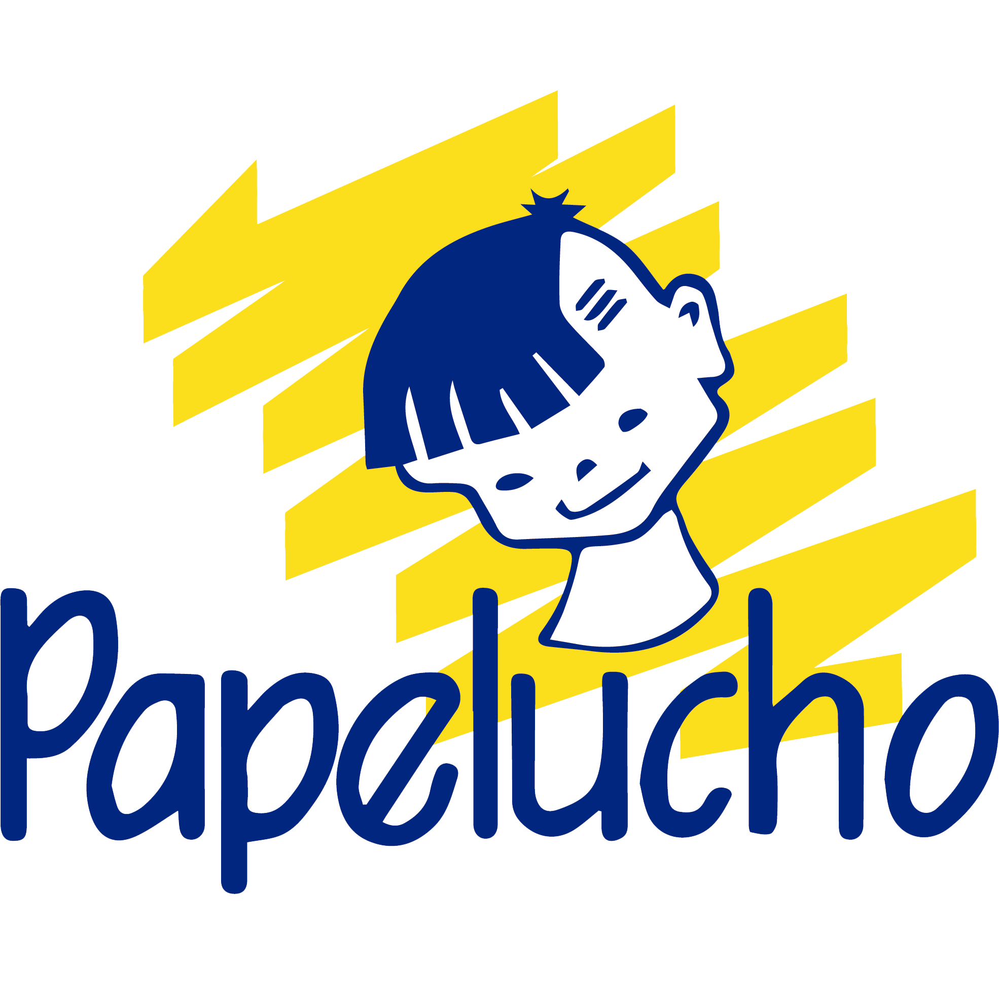

Sala Cuna y JardínAprendizajes significativos e integradores a través de experiencias lúdicas, en un ambiente de afecto, confianza, atención y cuidado.
Matricula a tu hijo o hijaEl trabajo pedagógico sigue las bases curriculares de la Educación Parvularia y los Mapas de Progreso del MINEDUC, con juego de rincones, visitas pedagógicas en la comunidad e iniciación al inglés.
Nuestra primera sede, inaugurada en 1995. Las Colonias 557.
Nuestro segundo establecimiento. José Blümell 049.